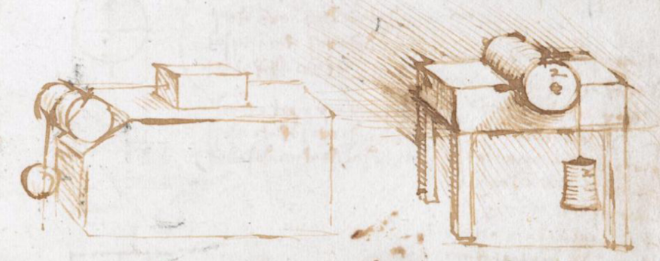
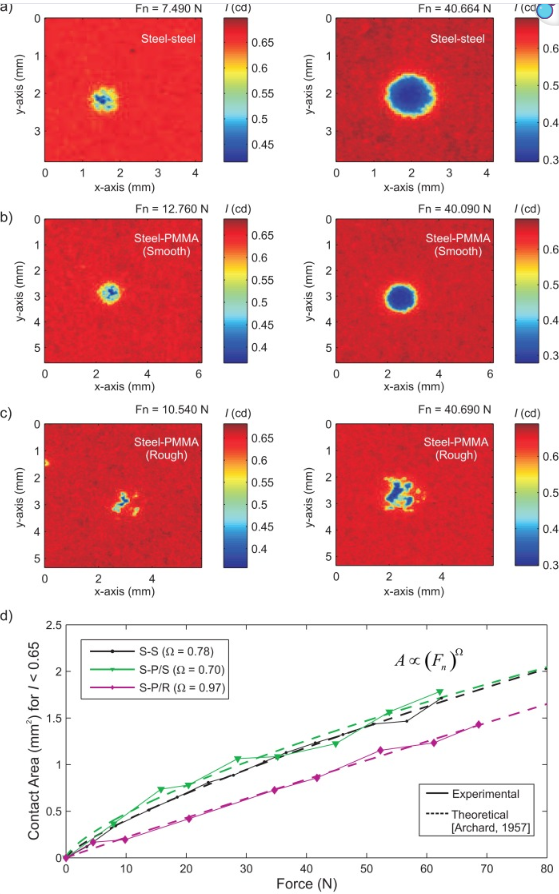

CLASE 6 - GEOFISICA DE MEDIOS GRANULARES
FRICCIÓN GRANULAR:
COULOMB-AMONTONS
THOMAS GALLOT,
CAMILA SEDOFEITO
Instituto de Fisica,
Facultad de Ciencias,
Universidad de la Republica
Plan de la clase
- Las tres leyes de la fricción sólida
- Fricción estática vs dinámica
- ¿Por qué la fricción no depende del área?
- Fricción en medios granulares
- Concepto de healing
- Cuando μ no es constante: velocity weakening
- Ciclo stick-slip y analogías
¿Por qué la fricción importa en geofísica?
Las tres leyes de la fricción sólida
La fuerza de fricción $T$ es proporcional a la carga normal $P$:
$T = \mu\, P$
La fuerza de fricción es independiente del área de contacto aparente.
La fricción estatica ($\mu_s$) es mayor que la fricción dinámica ($\mu_d$):
$\mu_s > \mu_d$
Duran, Sands, Powders, and Grains, Cap. 2, Sec. 2.2.1
Fricción estática vs dinámica
Cuando se aplica una fuerza horizontal creciente a un bloque sobre una superficie:
- $T < \mu_s P$: el bloque no se mueve
- $T = \mu_s P$: umbral de deslizamiento
- Al deslizar, la fricción cae a $\mu_d P$
Tipicamente $\mu_s / \mu_d \approx 1.1 - 1.5$
| Materiales | $\mu_s$ | $\mu_d$ |
|---|---|---|
| Madera / madera | 0.3 - 0.5 | 0.2 - 0.4 |
| Vidrio / vidrio | 0.4 | 0.3 |
| Metal / metal | 0.7 - 1.0 | 0.5 - 0.8 |
| Roca / roca | 0.6 - 0.7 | 0.4 - 0.6 |
μs > μd: esta diferencia es la semilla de toda inestabilidad de fricción.
Modelo de Bowden-Tabor
Las superficies reales nunca son perfectamente lisas: el contacto ocurre solo en las cimas de las asperezas.
$S_r \ll S_a$ y $S_r \propto P$
Duplicar $S_a$ redistribuye los contactos sin cambiar $S_r$.
Con $n$ asperezas de área $a$ cada una:
$P = n\,p_c\,a \;\Rightarrow\; S_r = na = P/p_c$
$T = n\,\tau_s\,a$
independiente de la geometría macroscópica ($n$, $S_a$).
Bowden, F.P. & Tabor, D. The Friction and Lubrication of Solids. Oxford, 1950.
Por qué la fricción no depende del área?
Las superficies reales tienen rugosidades a escala microscópica.
El contacto real ocurre solo en las cimas de las asperezas (Bowden y Tabor, 1950).
El área de contacto real $S_r$ es mucho menor que el área aparente $S_a$:
$S_r \propto P$ (proporcional a la carga)
Duplicar el área aparente no duplica el área de contacto: el número de contactos se redistribuye.

Bowden, F.P. & Tabor, D. The Friction and Lubrication of Solids. Oxford, 1950.
Fricción en medios granulares: tres escalas
En un medio granular, la fricción opera a tres escalas distintas que producen comportamientos cualitativamente diferentes:
Cada contacto grano-grano sigue las leyes de Coulomb-Amontons:
$T_i = \mu\, N_i$
La fricción entre dos granos depende del material, la rugosidad y la carga normal local. Es la misma física que un bloque sobre un plano.Los granos forman una red de fuerzas. La fricción a esta escala depende de:
- La geometría de la red de contactos
- La distribución de fuerzas normales y tangenciales
- El número de coordinación $z$
A escala del medio completo, la fricción efectiva resulta de los contactos movilizados:
- Solo una fracción de contactos esta al umbral de Coulomb
- Deslizar requiere reorganizar la red
- La dilatancia de Reynolds: el medio se expande antes de fluir
.
Andreotti, Forterre, Pouliquen, Granular Media, Cap. 2.
Healing: dependencia temporal de la friccion
El coeficiente de fricción estática no es constante: aumenta con el tiempo de contacto estacionario $t_w$ (tiempo de espera).
Mecanismo:
- Las asperezas en contacto sufren fluencia plástica (creep)
- El área de contacto real $S_r$ crece logaritmicamente con el tiempo
- Mayor $S_r$ requiere mayor fuerza para iniciar el deslizamiento
"El contacto tiene memoria: cuanto más tiempo en reposo, mas difícil es iniciar el deslizamiento."
Se grafica $\mu_s$ (fricción estática) en función del tiempo de espera $t_w$.
La ordenada al origen es $\mu_0$: valor de $\mu_s$ para $t_w = t^*$.
Consecuencia sismica: Cuanto más tiempo permanece bloqueada una falla, mayor es $\mu_s$, y mayor sera la caida de tensión al deslizarse → terremotos mas grandes.
Dieterich, J. (1972). J. Geophys. Res., 77, 3690. Rabinowicz, E. (1951). J. Appl. Phys., 22, 1373.
Analogia: fricción granular y fallas geológicas
Las zonas de falla contienen una capa de gouge (material granular triturado). La mecánica de la falla está gobernada por la fricción de este medio granular.
- Carga: la placa tectónica aplica esfuerzo de cizallamiento
- Healing: $\mu_s$ crece logarítmicamente durante la fase intersísmica
- Ruptura: $T$ alcanza $\mu_s P$ → deslizamiento subito
- Caida de fricción: $\mu_s \to \mu_d$ → terremoto
Para la mayoría de las rocas, independientemente del tipo: $\mu \approx 0.6 - 0.85$. Es el equivalente geológico de la ley de Coulomb.

Cuando μ no es constante: dependencia con la velocidad
Las leyes de Coulomb-Amontons suponen μ constante. Pero en la práctica, la fricción puede depender de la velocidad de deslizamiento:
μ crece con v → sistema se autoestabiliza → deslizamiento continuo (creep asismico).
μ decrece con v → la fricción se debilita con el movimiento → posible inestabilidad → stick-slip.
El sistema no oscila porque tenga inercia: oscila porque la friccion debilita con la velocidad y no puede encontrar un equilibrio estable.
El ciclo stick-slip
El stick-slip es un ciclo periódico de almacenamiento y liberación de energía elástica:
El resorte se tensa. La fricción estática μ_s impide el movimiento. La energía se almacena elásticamente.
La fuerza alcanza T = μ_s P. El sistema esta al límite del cono de Coulomb.
La fricción cae a μ_d < μ_s. La energía elástica se libera como energía cinética.
El bloque frena. La fuerza cae por debajo de μ_d P. El ciclo reinicia.
Stick-slip en la vida cotidiana
El stick-slip no es un fenómeno exótico: lo escuchamos y sentimos a diario.
Tiza en pizarrón
Sticks y slips a frecuencia audible (~200-500 Hz). El chirrido es el stick-slip. Cada chisquido es un evento de slip.
Arco de violín
El sonido del violín es un stick-slip periódico. La frecuencia de la nota (440 Hz para La) es la frecuencia de los slips.
Puerta que cruje
La bisagra seca tiene velocity weakening. El crujido es la firma acústica de cada evento de slip.
La escala cambia: de milímetros (tiza) a kilómetros (fallas). La física es la misma.
Condición de inestabilidad: el rol de la rigidez k
No basta con velocity weakening: el sistema también debe ser suficientemente blando.
Sistema inestable si:
caída de Ffric con v > rigidez k
compiten: |dFfric/dv| vs k
No puede "resistir" la caida de fricción → el bloque acelera → stick-slip inestable.
Restituye la fuerza rápidamente → el bloque frena → deslizamiento estable.
La pendiente de k vs la pendiente de dFfric/dv determina la estabilidad.
Midiendo la fricción granular
Tres técnicas permiten acceder a la mecánica interna de la fricción granular:
Granos birrefringentes bajo luz polarizada: las franjas revelan las cadenas de fuerza en tiempo real. Se ve directamente cuales contactos estan cargados y cuales no.
Cada slip emite una señal detectable. Los sensores piezoeléctricos registran la estadistica de eventos: magnitud, tasa, correlaciones temporales.
Medición directa de la fuerza de cizalla. Se observa la senal en diente de sierra del stick-slip y se miden μ_s, μ_d, periodo, amplitud.
Marone, C. (1998). Ann. Rev. Earth Planet. Sci. 26, 643.
De la fricción como ley
a la fricción como dinámica
Clase 6 — Lo que sabemos:
- Fricción como ley : T = μP
- μ depende del estado del contacto
- μ_s > μ_d: la semilla de la inestabilidad
- Healing: μ crece con el tiempo en reposo
- Velocity weakening: μ decrece con v
Clase 7 — Lo que viene:
- Cuando μ deja de ser constante → inestabilidad
- Modelo masa-resorte: stick-slip como dinamica
- Rigidez critica k_c
- Modelo Rate-and-State: μ(v, θ)
Cuando μ deja de ser constante, el sistema no puede encontrar un equilibrio estable. Esa inestabilidad, a escala geológica, son los terremotos.
Clase 6: ideas clave
Depende de la velocidad, del tiempo en contacto, de la presión. μ es una función del estado del sistema.
La red granular, la historia de carga y el tiempo en reposo (healing) modifican μ efectivo.
μ_macro ≠ μ_grano. Surge de la red de contactos y sus reorganizaciones colectivas.